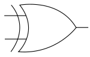

コンピュータの計算原理の世界観
コンピュータの計算原理の世界観です。ハードウェア１（半導体）も参照のこと。
計算の仕組み
コンピュータの原理
自分の書いたブログ「神々とともに生きる詩人」2021/01/27より。
また、コンピュータの原理においては、二進数の計算は、00+00=00, 01+00=01, 00+01=01, 01+01=10の4通りしかない。
これは、論理回路におけるANDとEXORで機械的に計算できる。
実際は、これは下桁からの繰上りを考慮していないため、半加算器と呼ばれる。
下桁からの繰上りを考慮した全加算器は、二つの半加算器とOR回路によって実現できる。
また、減算については2の補数を加算することで実現できる。
2の補数とは、ビットの0と1を反転させて1を加算した表現のことで、正の数に負の数を加算すれば必ず桁あふれが起きて結果が0になる。
乗算と除算については、小学校で習う筆算と同様に、桁ごとに演算を行えば実現できる。
後日注記：正の数に負の数を加算するという説明は誤解を招く表現だった。同じ数の正負の符号を反転させた数を足すと、必ず桁あふれが起きて0になる。たとえば5は二進数で00000101だが、この2の補数はビットを反転させた11111010に1を加えて11111011となり、これが-5となる。00000101に11111011を加えると、必ず上に桁あふれをして00000000になる。注意点として、符号付き整数を扱う際、一番上のビットは正負の符号を示すために使うため、1ビットだけ情報量が少なくなる。
（放送大学「情報学へのとびら ('16)」を参考にして執筆しました。）
スイッチングの基本
論理回路はスイッチングによって実現できる。図にすると、要するにこういうことである。
ブール代数
ブール代数は、以下のようになる。
| ブール代数 | 例 |
|---|---|
| 論理和 OR | 0 + 0 = 0 0 + 1 = 1 1 + 0 = 1 1 + 1 = 1 |
| 論理積 AND | 0 ・ 0 = 0 0 ・ 1 = 0 1 ・ 0 = 0 1 ・ 1 = 1 |
| 論理否定 NOT | \(\overline{1}\) = 0 \(\overline{0}\) = 1 |
このブール代数がなければ、コンピュータは生まれませんでした。
（詳しくは【早わかり電子回路】ブール代数の基本をわかりやすく整理 [デジタル回路の前提知識] | アイアール技術者教育研究所や痛快! コンピュータ学を参照のこと。）
2023.02.18編集
論理回路
（放送大学「情報学へのとびら ('16)」を参考にして執筆しました。）
否定（NOT）
否定は0と1を反転させたもの。
| P | NOT P |
|---|---|
| 0 | 1 |
| 1 | 0 |
NOTの回路記号：
論理積（AND）
論理積は2つの値の（算術）積となっている。
| P | Q | P AND Q |
|---|---|---|
| 0 | 0 | 0 |
| 0 | 1 | 0 |
| 1 | 0 | 0 |
| 1 | 1 | 1 |
ANDの回路記号：
論理和（OR）
論理和も2つの値の（算術）和にだいたいなっているが、1と1の論理和は1となっている。
| P | Q | P OR Q |
|---|---|---|
| 0 | 0 | 0 |
| 0 | 1 | 1 |
| 1 | 0 | 1 |
| 1 | 1 | 1 |
ORの回路記号：
排他的論理和（XOR）
排他的論理和（XORあるいはEXOR）は2つの値のどちらか一方が1であれば答えが1になるが、両方とも1の場合は答えが0になる。
| P | Q | P XOR Q |
|---|---|---|
| 0 | 0 | 0 |
| 0 | 1 | 1 |
| 1 | 0 | 1 |
| 1 | 1 | 0 |
XORの回路記号：

XORは暗号技術で使われている。暗号を参照のこと。
2025.03.13
スイッチング素子
このような論理回路は、スイッチング素子を用いて実現できる。スイッチング素子とは、オンとオフの2つを切り替えられるような機能を持った素子。
ただし、いちいち人間が切り替えるのではなく、他の素子と関連して自動的に切り替わるようになっている。
コンピュータでよく使われるのは、MOS FETという半導体だが、歴史的にはバイポーラトランジスタ、真空管、リレーなどが用いられた。
新しいものほど、小型で、高速で、電力の消費量が少ない。現在は数cm2の半導体チップに100万以上の素子を乗せた集積回路が使われている。
リレー
（放送大学「情報学へのとびら ('16)」を参考にして執筆しました。）
リレーを用いた計算機では、1つの接点に蝶番で鉄片が取り付けられていて、その鉄片は電磁石の極の先に付けられている。
鉄片は、何もしない場合は、バネによって電磁石から遠いOut1という接点に接しているため、Out1がOnで、Out2はOffである。
だが、InのスイッチがOnになると、電流が電磁石に流れて鉄片を引き寄せ、Out2がOnになり、Out1がOffになる。

これを表にすると以下のようになる。Onを1、Offを0とすると、Out1はInの否定になっている。
| In | Out1 | Out2 |
|---|---|---|
| Off | On | Off |
| On | Off | On |
リレー回路
以下はリレーを用いたAND、OR、EXORのリレー回路である。
ANDは、二つのInどちらもOnになった時に、OutがOnになる。
| In | In2 | Out |
|---|---|---|
| Off | Off | Off |
| Off | On | Off |
| On | Off | Off |
| On | On | On |
ORは、二つのInどちらかがOnになった時に、OutがOnになる。
| In | In2 | Out |
|---|---|---|
| Off | Off | Off |
| Off | On | On |
| On | Off | On |
| On | On | On |
EXORは、二つのInのどちらかがOnであればOutがOnになるが、二つのInどちらもOnであればOutがOffになる。
| In | In2 | Out |
|---|---|---|
| Off | Off | Off |
| Off | On | On |
| On | Off | On |
| On | On | Off |
加算器
二進数での1桁+1桁の加算は、0+0, 0+1, 1+0, 1+1の4通りしかない。1+1の場合は上の桁への繰り上がりが起きるため、繰り上がりがあるかどうかを表す出力が必要となる。
Out1を繰り上がりがあるかどうか、Out2を加算結果（の1桁目）とすると、次のような真理値表が得られる。
| In1 | In2 | Out1 | Out2 |
|---|---|---|---|
| 0 | 0 | 0 | 0 |
| 0 | 1 | 0 | 1 |
| 1 | 0 | 0 | 1 |
| 1 | 1 | 1 | 0 |
これを見ると、In1とIn2に対して、Out1はANDであり、Out2はEXORとなっている。
よって、AND回路とEXOR回路を組み合わせることで、以下のような加算器を構成できる。
半分のうち上がAND回路、下がEXOR回路で、In1とIn2を2つに分け、1つのスイッチで2つのリレーが動くようにしている。
ただし、これは1桁+1桁の加算であれば問題ないが、多桁の加算の場合、下の桁からの繰り上がりを考慮していない。そのため、半加算器と呼ばれる。下からの繰り上がりを考慮に入れた場合（全加算器）の真理値表は以下のようになる。Cが下の桁からの繰り上がりがあるかどうかを示す。
| In1 | In2 | C | Out1 | Out2 |
|---|---|---|---|---|
| 0 | 0 | 0 | 0 | 0 |
| 0 | 1 | 0 | 0 | 1 |
| 1 | 0 | 0 | 0 | 1 |
| 1 | 1 | 0 | 1 | 0 |
| 0 | 0 | 1 | 0 | 1 |
| 0 | 1 | 1 | 1 | 0 |
| 1 | 0 | 1 | 1 | 0 |
| 1 | 1 | 1 | 1 | 1 |
これは、このように実現出来る。
この全加算器により、多桁の加算器が構成できる。多桁の加算器は、それぞれの桁に加算器を用意することで実現できる。一番下の桁は半加算器で良い。あとはその半加算器に結合する形でそれぞれの桁の全加算器を構築すれば良い。
減算
減算は、2の補数を加えることで実現できる。
2の補数とは、たとえば0001111であれば1110001であるかのように、全ての数を反転させて、その値に1を加えた数のこと。
この時、一番上のビットは必ずプラス値の場合0、マイナス値の場合1となる。
よって、00001111の補数は11110001となる。
-1は0001に対して1111、-2は0010に対して1110、-3は0011に対して1101、-4は0100に対して1100となる。
減算の例として、000111に111001を加える場合、全ての数を反転した数に1を加える前に、その反転させた数をまず足すことを考えてみる。
当然、必ず全ビットが1になる（111111）。
これに1を加えれば、桁あふれが起きると同時に必ず全ビットが0になる（000000）。
この桁あふれさえ無視してしまえば、必ず結果は0となる。
-1よりも-2の方が符号なしの数値の上では1小さいため、差が存在する時は適切に差が残る。
-1よりも-2の方が小さいため、足した時に1小さな数値になる。
乗算と除算
乗算については、確かに3を3回繰り返して足しても実現できるのだが、人間が小学生で習う「筆算」を使って、それぞれの桁について、0をかけるときは何も加えず、1をかけるときは元の数をシフトした数を加えることで実現できる。よって、桁をシフトする機能と加算ができれば実現できる。
同様に除算についても、筆算を使って、減算と桁をシフトする機能があれば実現できる。割られる数から割る数を、右にシフトさせながら、引ける場合にだけ引く（実際は2の補数を加えて桁あふれが起きるかどうかで引けたかどうかを判断する）ことで実現できる。
その他のリンク集
坂村健さんによる解説
僕は上記のコンピュータの加算器の演算回路について、放送大学「情報学へのとびら ('16)」を参考に執筆しましたが、TRONの坂村健さんが著書の中で同じような解説をされているので、参考になさってください。
コンピュータがどのように計算しているか
基本的に、論理積（AND）・論理和（OR）・論理否定（NOT）の論理回路を組み合わせることで、2進数の足し算を実現している。
以下のサイトがとても参考になる。
アーキテクチャ
CPU・メモリというコア装置が計算をしていて、そこに情報が入出力される
コンピュータの仕組みが良く分からない人は、CPUとメモリという「コア装置」があって、そのコア装置にハードディスクなどから「情報」が入出力として送受信され、その上でマウス、キーボード、ディスプレイが「イベント」を与えると理解すると良いでしょう。
ここで重要なのは、コア装置よりも入出力として与えられる「情報」です。この情報の中に、全てのプログラム、全てのデータ、全ての設定内容、そして全ての読み書きされる内容が保管されているからです。
コア装置と情報がやりとりしながらイベントを送り合う、そんな機械がパソコンです。情報の中にプログラムがあり、そのプログラム情報の中の中核部分（カーネル）によって情報の「形態」や「形式」が決められ、それらが個別のプログラムとなって「カーネルとプログラムが協調して動作する」と理解すると良いでしょう。
コンピュータは計算とメモリ
コンピュータの基本は、計算とメモリです。それも、CPU自体は足し算（あるいは四則演算）しかできません。三角関数のような基本的な数学の関数でさえ、プログラミングを用いて行います。
また、メモリといっても、処理速度の速さから言って、CPUのレジスタ、メモリ（キャッシュメモリと主メモリ）、ハードディスクなどの大容量記録装置があります。
このようなパソコンですが、プログラミングでやっていることはまさに、計算とメモリです。
「aに3を入れろ」「bに10を入れろ」「a+bを計算してそれをcに入れろ」という、まさに電卓をやっているだけなのが、ハードウェアとしてのコンピュータです。あとは、そのaやbやcがどこにあって、どこから読み出し、どこへと転送するか、ということをやっているだけが、ストレージやネットワーク、あるいはデータベースです。
プログラミングとは、計算を行うための手段であると同時に、計算を何のために行うかという目的です。繰り返したり条件分岐したり、といったことは、ハードウェアを上手く活用して、抽象化されたプログラムをいかに作るのか、ということの「応用の極め」にすぎません。
ですが、一度作ったプログラムは何度でも使えます。変更する必要なく再利用できることが理想であるため、バージョンアップという発想は、正しいプログラムでは必要のない考え方です。ですが、プログラムを作るのもプログラマという人間の行いであり、プログラムは間違えなくても人間が間違えてしまいます。人間の間違いを後になって修正する、それがバージョンアップです。
どこまでをプログラムの内部に書き、どこからを外部に出す（実行時に決める）か
また、プログラムとは永遠のデータ処理のようなもので、プログラムの内部で保持される定数や変数があると同時に、外部からそうしたデータを読み込むプログラムを書くこともできます。
このため、「どこまでをプログラムの内部に書き、どこまでを外部に出すか」ということが重要になってきます。
プログラムの作成時に想定できる範囲が全てなら、それで良いでしょう。ですが、プログラムが使われるうちにデータや設定を変更し、外部に書き出して実行時に読み込むことで、あらかじめ決められているファイル形式で保存したデータを、読み込んだり書き出したりすることができます。
また、プログラムの外部として動的に処理するのはデータや設定ファイルだけではなく、ユーザーのフォームの入力や、どんな行動をしたかというログや、あるいは、プログラムの通信対象（たとえばサーバーに存在するWebサイトのデータなど）なども、プログラムの外部に出すべきデータとなります。
よって、単純に人工知能を学習するだけではなく、Webサイトの更新をチェックする「アンテナ」の更新日時や、ツイッターに自動的に文章を投稿する「ボット」などの定型文章（テンプレート）なども、プログラムのある意味でのデータと言えます。こうしたデータは、大規模で再利用可能なプログラムでは必ず必要になります。プログラムが必要とすることで、プログラムの中に書かれるものは、少ししかありません。ほとんどが、外部データを操作して読み書きするだけです。
コンパイラを上手く使うこと
そういうわけで、プログラム自身である「情報」をどのように組み立てるか、ということが、コンピュータを使う上で重要になってきます。
この時、機械語で直接プログラムを書くと、そのコンピュータのCPUでしか、プログラムが動かなくなります。この際にC言語などの「高級言語」を使うことで、UNIXがそうだったように、さまざまなアーキテクチャにプログラム（OS）を移植することができます。
高級言語は、そのままではCPUでは動きません。高級言語（C）をCPUの機械語（Intel x86）に翻訳するプログラム、すなわち「コンパイラ」が必要となります。
昔は、コンパイラは「限りあるコンピュータ資源の無駄」であると言われましたが、今ではほとんどのOSがコンパイラを使って作られています。また、OSの上でJavaのようなミドルウェアを実行することで、さらに高水準の高級言語を使うことも増えています。今では、CのプログラマよりもJavaのプログラマの方がはるかに多いです。
OSとカーネル
また、コンピュータのハードウェアを支配しているのは、OSと呼ばれるプログラムです。OSの中で、中核に当たる部分をカーネルと言います。
カーネルのやっていることはOSを参照していただくとして、ハードウェアから見れば、常にカーネルがマルチタスクでプログラムを実行し、そのカーネルの内部で「さまざまな内部情報」を構築して、その中にデバイスの情報やそれを処理するデバイスドライバ、あるいはFATやNTFSのハードディスクを操作するために必要なファイルシステムモジュールを読み込み、その中で「上手くハードウェアのイベントに応じてやり取りすること」で、カーネルは成り立っています。
プログラムの実行が要求されると、カーネルはプログラムのインスタンスである「プロセス」を生成します。プロセスの論理アドレス空間は物理アドレス空間に変換され、それぞれのプログラムが別々のアドレス空間を持つようにします。また、別のプロセスの実行が要求されると、カーネルはレジスタの内容をレジスタ外に退避して、そのプロセスを停止させ、別のプロセスを同時に実行し、スケジューラのクォンタム（プロセスを切り替える時間）と優先順位に基づいて次々にプログラムを実行させます。また、ユーザーモードとカーネルモードはカーネルの中で明確に区別され、ユーザーランドのプログラムがカーネルのメモリ空間にアクセスすることはできません。
デジタルと符号
コンピュータは二進数の計算以外、何も出来ない
コンピュータは、内部の数値データを全て二進数で保持している。言ってしまえば、人間がどのような計算をさせても、コンピュータの方はただ二進数を論理回路で計算しているだけである。
コンピュータは、二進数を計算して、CPUで用意されたレジスタやメモリへ入出力を行う以外、何も出来ない。それ以上のことは、人間が「プログラミング」しなければならない。これがコンピュータの肝である。コンピュータは、そもそもプログラミングしなければ何も出来ない。最初から、二進数以外のことはプログラミングすることを意図して、コンピュータという機械は作られているのである。
CPUは順に命令を実行するほか、実行の順番を制御する「ジャンプ命令」がある。これはC言語のgotoに相当する。現代的なOS（カーネル）やコンパイラは、こうした順番の制御と二進数の計算とハードウェア的なやりとりによって作られている。モニターに映る内容はウィンドウシステムが描画している。
オープンソースの真価とは、こうしたプログラマブルな環境をユーザーに自由に解放することにある、と言っても良いだろう。確かにWindowsの方が会社が作っていて信頼できるかもしれないが、Windowsのソースコードは非公開である。Linuxは今のところWindowsほどに優れたGUIは提供していないが、ソースコード全てがオープンなライセンスで公開されている。それは、「自分で研究し、改造し、コピーし、再配布する自由」があることを意味する。フリーソフトウェアと呼ばれるこれらの自由は、「CPUの上にある、全てのプログラム可能な環境を与える」という意味で、コンピュータ本来の自由を取り戻すということを意味しているのである。
Windowsのようなクローズドなソフトウェアを独占的（プロプライエタリー）なソフトウェアというのは、著作権を利用してみんなのものを独占しているからである。言ってしまえば、「ドラえもんの絵しか描けない絵の具」に近い。それしか使ったことのない人間は、自分でもっと高度なOSをハッキングする楽しみを知らないのである。金儲けを取るか、自由を取るか、それがGNUの正義なのである。
ただ、そんなにGNUがかっこいいかというと、そうでもない。GNUは、自分の所有するコンピュータの自由という概念を持ち出して、「Microsoftが全てのコンピュータを勝手に独占している」と言うが、私有権をもっとも否定するのはGNUである。そういうところがおかしいから、Red Hatのようにみんなを騙して儲ける企業が出てくる。そもそもが革命は悪である。それは、言っておかなければならないだろう。
別ページ
量子コンピュータ
量子コンピュータを参照のこと。
AI技術
パーセプトロンによる論理ゲートの仕組みについては、PythonでAI入門も参照のこと。
リンク集
コンピュータ・アーキテクチャ
コンピュータ・アーキテクチャについて。
Wikipedia
簡単な説明
ハードウェア
- ハードウェア
- コンピュータの計算原理（リレーとスイッチ）
- 論理回路（AND、OR、NAND、NOR、XOR）
- 二進数の演算（加算器）は下桁からの桁上がりを考慮した論理回路（AND, OR, NOT, XOR）によって実現できる
- 2進数の1ビットの計算は、0+0=0, 0+1=1, 1+0=1, 1+1=10（桁上がりを考慮しなければ0）しかない。これらは人間と同じ頭脳がなくても、機械的な論理回路（XORとAND）だけで計算できる。
- 2進数の1ビットだけの計算を行う加算器を半加算器と呼ぶ
- 実際は計算は1ビットだけではなく、「下の桁から桁上がりする数」も考慮しなければならない
- 桁上がりを考慮した加算器は2個の半加算器とORで実現でき、これを全加算器と呼ぶ
- 負の数は2の補数表現によって実現できる
- 2の補数とは、2進数で0と1を反転させた数に1を足したもの
- 同じ数を負数にして足した時に、桁あふれを考慮しなければ、必ず0になる
- 真空管、トランジスタ、集積回路（IC）
- CPUとメモリ
- CISCとRISC
- 命令サイクル
- オペコード、オペランド
- アドレス計算
- レジスタ
- パイプライン
- 複数の命令実行サイクルを行う際に、CPUの命令実行サイクルを1つずつずらして同時に行うことで、処理が高速化する
- 特に命令の単純なRISCで効果的
- キャッシュメモリ
- 遅い主メモリの代わりに、よく使うデータをキャッシュメモリに入れることで、処理を高速化できる
- キャッシュには、ライトスルー方式（データをキャッシュメモリに書き込む際に主メモリあるいはハードディスクにも同時に書き込む・書かれ終わるまで待つ）と、ライトバック方式（キャッシュに書かれた時点で書き込み完了として次の処理にバックする）がある
- メモリ管理方式
- LSIの製造プロセス
- CPUアーキテクチャ
- Intel x86
- AMD x86-64
- Intel IA-64
- IBM POWER
- Sun SPARC
- DEC Alpha
- ARM
- 量子コンピュータ
- 磁気テープ、磁気ディスク
- 磁気ヘッドと磁気テープによってデータを記録する
- 磁気ヘッドから電磁気が流れ、磁気テープに記録される
- ハードディスクはヘッドがディスクに接していない（空中を移動する）ため高速
- ヘッド、シリンダ、トラック、セクタ
- FAT（ファイルアロケーションテーブル）
- SSD
- CRTモニター
- プリンター
- コンピュータの計算原理（リレーとスイッチ）